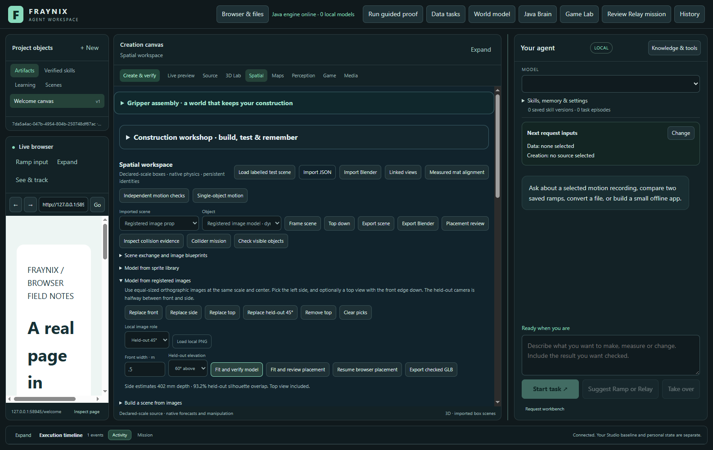
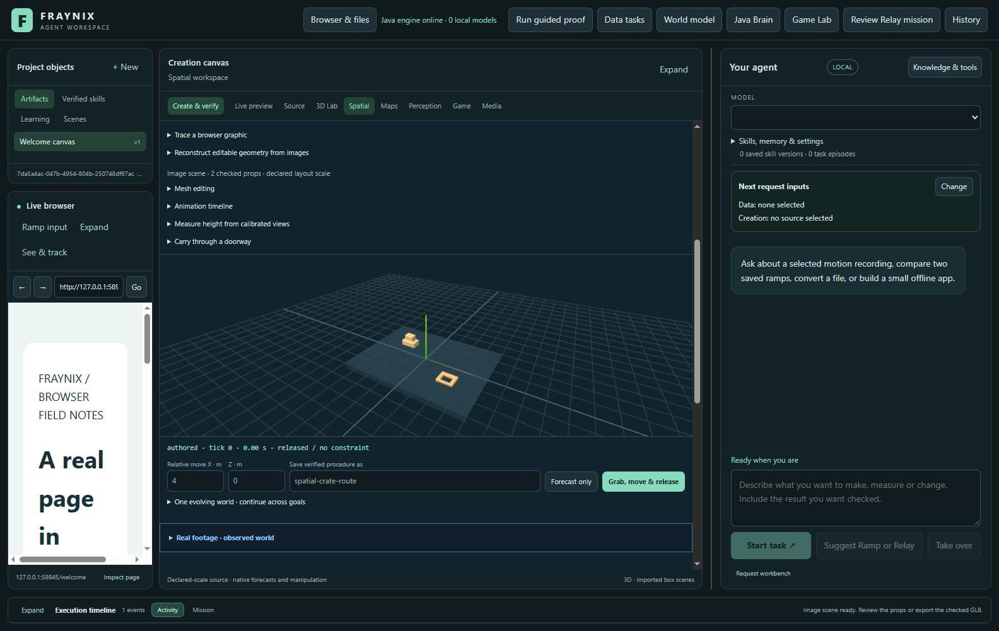
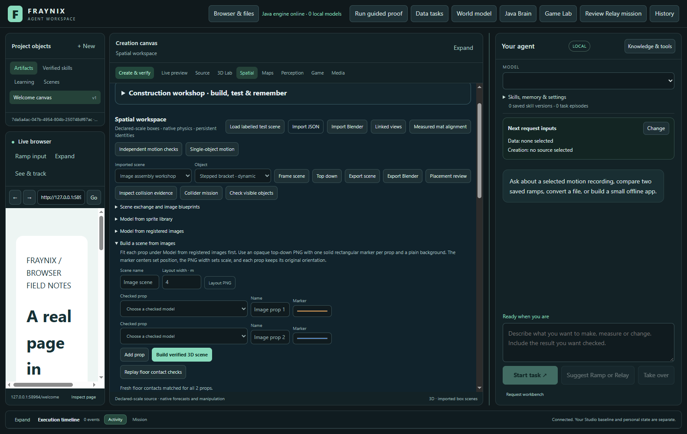
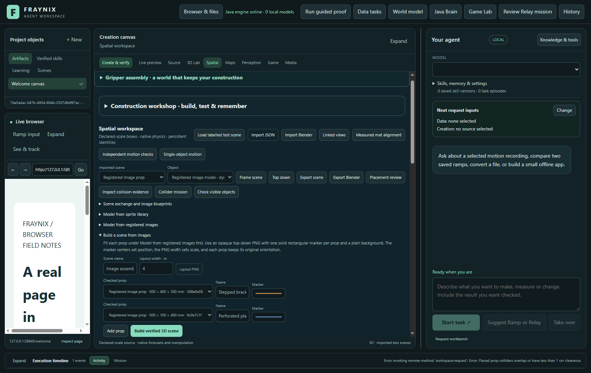

Build editable 3D scenes from registered images
Two registered PNG sets produced editable models. A scaled overhead layout placed both on a shared floor, and Java replayed their measured contacts after restart.

A local registered image set passes its independent view check

Two separately reconstructed meshes share one 3D scene

Fresh support checks match after desktop restart

An overlapping collider layout is refused before a scene is saved
System files
Open source